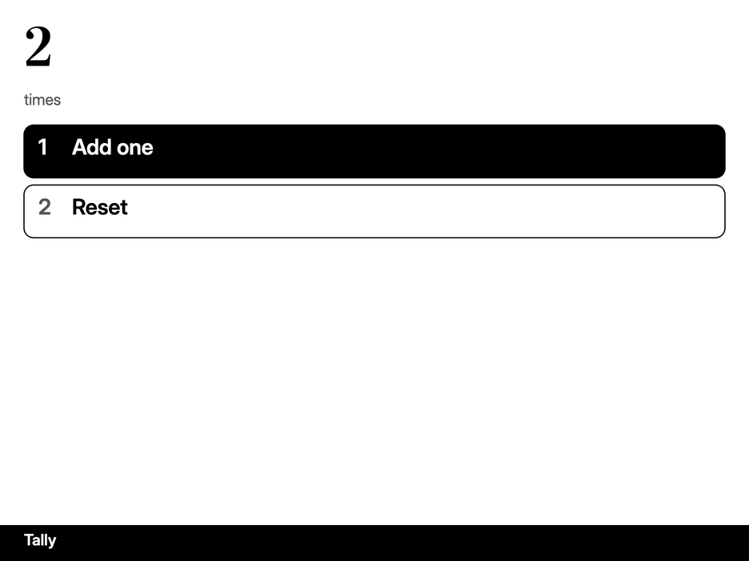
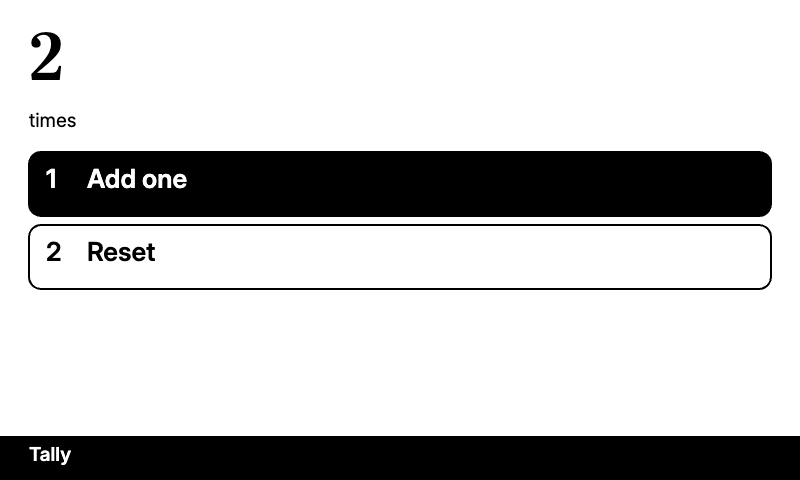

Declaration
function Value(value: string, label: string = ""): View
Parameters
value- A short text shown large: a number, a temperature, a fraction. Literata semibold, 44 pt.
label- What the value means, in gray below it.
Discussion
Prefer Value over Title(_:) for numbers that change on every press: a value change does not count as a new screen, so the refresh stays partial (see Screen updates and refresh).
counter.ts
// Name: Tally import { App, View, Layout, Value, List, TitleBar, state, register } from "./trmnl-ui"; export { trmnl_event } from "./trmnl-ui"; const count = state("count"); // survives every wake const choice = state("choice"); // which row has the focus function act(row: i32): void { if (row == 0) count.value = count.value + 1; else count.value = 0; } class Tally extends App { body(): View { return Layout([ Value(count.value.toString(), "times"), List(["Add one", "Reset"], choice).onSelect(act), TitleBar("Tally"), ]); } } register(new Tally());


After two presses of Select on Add one.
See Also
f
Row(_:)Places views side by side in equal widths.
f
ProgressBar(_:_:)How far along something is.
A
Screen updates and refresh
When the e-paper does a full refresh and when a fast partial one.